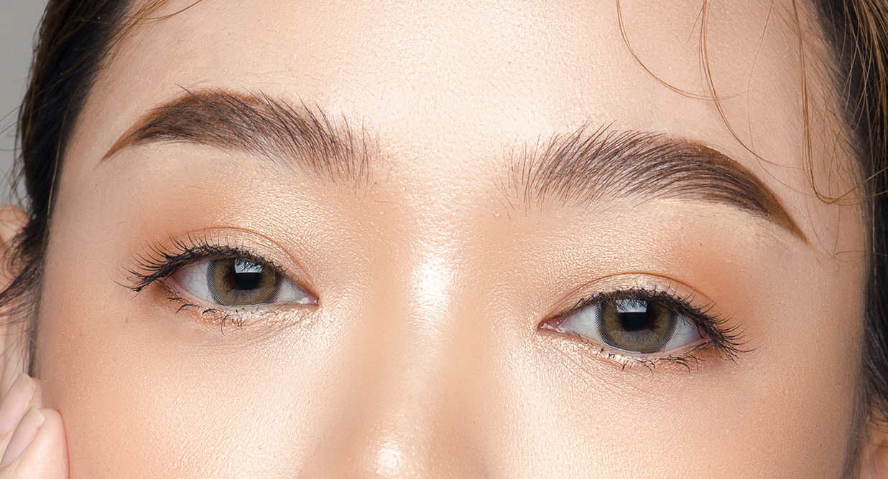
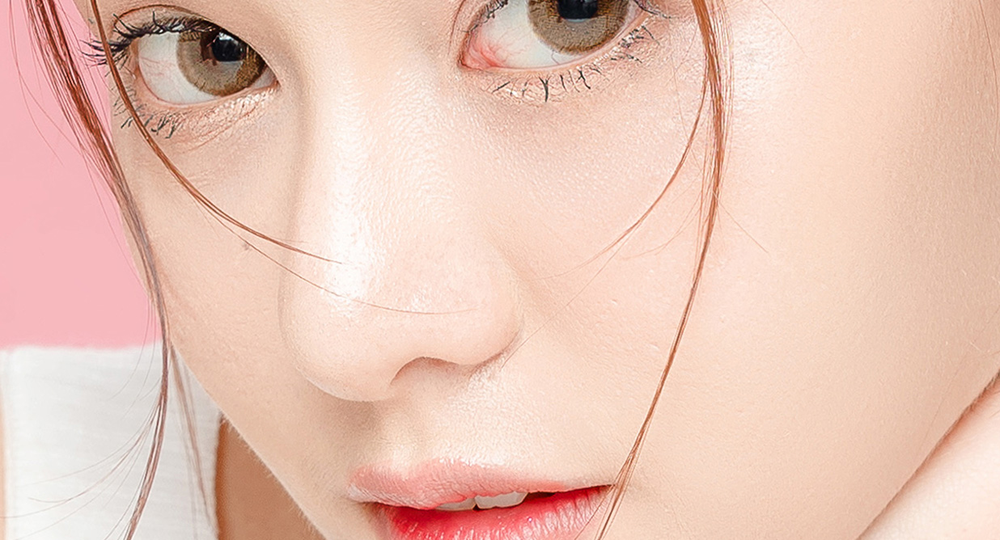

ไม่ว่าจะเป็นเทรนด์แต่งหน้าตามสาวเกาหลี แต่งตัวมินิมอลแบบเกาหลี หรือเทรนด์ cafe hopping แบบเกาหลี เราต้องยอมรับแล้วว่าประเทศเกาหลีทรงอิทธิพลสุดๆในเรื่อง soft power ทั้งนี้หนึ่งในเทรนด์เกาหลีที่มาแรงกว่าเทรนด์ไหนๆคือการทำศัลยกรรมในเกาหลี ประเทศที่ขึ้นชื่อเรื่องความเชี่ยวชาญในการแปลงโฉมอันดับต้นๆ ของโลก
ในปัจจุบันการทำศัลยกรรมที่เกาหลีกลายเป็นเทรนด์สำคัญที่ทำใจสาวๆหนุ่มๆคนไทยว้าวุ่นกันไปหมด เพราะที่นี่ไม่ได้มีดีแค่ชื่อ แต่ไม่ว่าใครจะไปศัลยกรรมส่วนไหน แก้ไขจุดบกพร่องใด กลับมาไทยก็กลายเป็นคนละคนทันที ทั้งนี้เพราะความนิยมมาอย่างยาวนานและต่อเนื่อง ทำให้เทรนด์ทำศัลยกรรมเกาหลีมีการเปลี่ยนแปลงอยู่ตลอดเวลา ทั้งนี้ในปี 2023 เทรนด์ศัลยกรรมเกาหลีจะเน้นไปในทางที่เน้นความเป็นธรรมชาติ เน้นสร้างความมั่นใจในตัวเองว่าทุกนมีความสวยในแบบของตัวเอง มาดูกันว่าเทรนด์ศัลยกรรมเกาหลีในปี 2023 มีอะไรบ้าง
เทรนด์ศัลยกรรมตาในปี 2023 จะเน้นไปที่การทำชั้นตาเล็ก ที่ดูเป็นธรรมชาติมากขึ้น แทนการทำชั้นตาหนาๆ ที่ดูเป็นธรรมชาติน้อยลง โดยเทคนิคการทำชั้นตาที่นิยมในปีนี้ ได้แก่
โดยการกรีดสั้น เป็นขั้นตอนที่นิยมสำหรับคนที่ต้องการทำตาชั้นโดยมีพื้นฐานที่ดีเพียงมาปรับชั้นตา ข้อดีของการกรีดสั้นคือแผลหายไว ใช้เวลาในการพักฟื้นน้อย
การกรีดยาว เหมาะสำหรับเคสที่มีปัญหาชั้นตาอ่อนล้า มีชั้นตาหลายชั้นซ้อนกัน และตาสองข้างไม่เท่ากัน ทั้งยังเหมาะกับเคสที่เคยทำตามาก่อนและต้องการแก้ไข เทคนิคนี้จะเป็นการกรีดยาวผลถาวร พร้อมกับปรับชั้นกล้ามเนื้อตาเพื่อให้ตาดูสดใสมากขึ้น
การเย็บจุด เหมาะสำหรับคนที่ต้องการทำชั้นตาชั่วคราว แบบไม่ถาวร เทคนิคนี้จะใช้ไหมและการเย็บจุด 3 จุดเพื่อให้เกิดชั้นตา แต่ก็จะไม่ใช่ผลถาวรเพราะในอนาคตปมที่มัดไว้ก็อาจจะคลายและหลุดกลับคืนสภาพเดิมได้นั่นเอง
เทรนด์ศัลยกรรมจมูกในปี 2023 จะเน้นไปที่การทำจมูกทรงสโลปปลายหยดน้ำ ซึ่งให้ความรู้สึกอ่อนหวาน ละมุนละไม และดูเป็นธรรมชาติมากขึ้น แทนการทำจมูกทรงโด่งๆ ที่ดูออกว่าผ่านการศัลยกรรม โดยเทคนิคการทำจมูกที่นิยมในปีนี้ ได้แก่ การทำจมูกด้วยเทคนิคแบบเปิด
การทำจมูกแบบกรีดเปิด เป็นการทำจมูกที่ได้รับความนิยมมากที่สุดในปัจจุบัน เพราะสามารถปรับรูปทรงจมูกได้อย่างละเอียด โดยการทำจมูกแบบกรีดเปิดนั้น ศัลยแพทย์จะทำการกรีดผิวหนังที่จมูกออก เพื่อทำการแก้ไขกระดูกและเนื้อเยื่อจมูก ซึ่งจะช่วยให้จมูกมีทรงที่สมส่วนและสวยงามมากขึ้น ทั้งนี้หากมีความต้องการให้ทรงจมูกสูงมากๆ อาจใช้ไม่ได้กับทุกคนเสมอไปเพราะต้องดูหน้างานว่าใบหน้ามีเนื้อมากพอหรือไม่ และดูว่าจะรับกับองค์ประกอบอื่นๆ บนใบหน้าหรือไม่ด้วย
เทรนด์การยกกระชับทั้งแบบ mini และ full face ก็เรียกได้ว่ามาแรงสุดในปี 2023 เพราะมันเป็นการคืนความอ่อนเยาว์ให้ใบหน้าอย่างมีประสิทธิภาพและแน่นอนว่าการศัลยกรรมที่ประเทศเกาหลีถือเป็นจุดหมายปลางทางเพราะมีความเชี่ยวชาญในด้านนี้
การยกกระชับแบบ mini จะเน้นการยกกระชับสำหรับผู้ที่มีริ้วรอยที่ชัดเจนโดยเฉพาะบริเวณขากรรไกรและลำคอ หรือกรอบหน้ามีความห้อย ร่องแก้มชัด ส่วนแบบ full face จะเป็นการผ่าตัดให้มีความตึง กระชับ โดยมีสามส่วนคือใบหน้าส่วนบน ส่วนล่าง และลำคอ โดยจะเป็นการเย็บตกแต่งและดึงให้ตึงที่สุด ความแตกต่างคือ mini เป็นการยกกระชับเฉพาะจุด แต่ fullf face จะยกกระชับทุกจุดในสามส่วนที่ได้กล่าวไป
เทรนด์ทำศัลยกรรมเกาหลีสำหรับใบหน้าในปี 2023 จะเน้นไปที่การทำโครงหน้าที่เป็นธรรมชาติและสมส่วนมากขึ้น แทนการทำวีไลน์ที่อาจดูไม่เป็นธรรมชาติ ดังนั้นการเน้นความสมดุลของทุกองค์ประกอบในใบหน้าให้ดูดีจึงตอบโจทย์ที่สุด
ศัลยกรรมโครงหน้าด้วยการตกแต่งกระดูก เหมาะสำหรับคนที่ต้องการเพิ่มความละมุนให้กับใบหน้า ต้องการเปลี่ยนแปลงผลลัพธ์ทันตาหลังทำ สาวๆคนไหนที่ปัญหากระดูกใหญ่ หน้าเหลี่ยม แก้ไขด้วยการผ่าตัดโครงหน้าได้
ด้วยเทรนด์ที่มากมายอย่างที่ได้เกริ่นไปข้างต้น สำหรับมือใหม่ที่อยากศัลยกรรมแต่ยังไม่เคยมาก่อน เรามีคำแนะนำดีๆมาฝาก การเริ่มต้นทำศัลยกรรมตามเทรนด์เกาหลีนั้นขึ้นอยู่กับความชอบและงบประมาณของแต่ละคนเป็นหลัก โดยสามารถพิจารณาจากเทรนด์ศัลยกรรมเกาหลีในปี 2023 ดังต่อไปนี้
หากต้องการเริ่มต้นทำศัลยกรรมตามเทรนด์เกาหลี ควรศึกษาข้อมูลเกี่ยวกับศัลยกรรมแต่ละประเภทให้ดีก่อนตัดสินใจทำ โดยควรเลือกสถานพยาบาลและศัลยแพทย์ที่มีความเชี่ยวชาญ เพื่อความปลอดภัยและผลลัพธ์ที่ดี
สำหรับบางคนที่มีงบจำกัด อาจเริ่มต้นจากการฉีดฟิลเลอร์หรือโบท็อกซ์ เพื่อปรับรูปทรงของใบหน้าให้ดูดีขึ้นก่อน ก่อนที่จะตัดสินใจทำศัลยกรรมใหญ่ในภายหลัง อีกทั้งข้อดีของการเริ่มฉีดหน้าก่อนจะทำให้เห็นภาพว่าหากมีการเปลี่ยนแปลงแบบถาวรในภายหลังจะไม่เป็นการกระทำที่ผิดพลาด มากไปกว่านั้นแนะนำว่าควรพิจารณาถึงความต้องการและความเหมาะสมของแต่ละบุคคลด้วย โดยปรึกษากับศัลยแพทย์เพื่อหาแนวทางที่เหมาะสมที่สุด ต่อไปนี้เป็นคำแนะนำในการเริ่มต้นทำศัลยกรรมตามเทรนด์เกาหลี
การทำศัลยกรรมเป็นการตัดสินใจครั้งสำคัญ ควรศึกษาข้อมูลและปรึกษาผู้เชี่ยวชาญอย่างรอบคอบ เพื่อความปลอดภัยและผลลัพธ์ที่ดีที่สุด
ศัลยกรรมตา
ศัลยกรรมโครงหน้า
ศัลยกรรมปาก
ศัลยกรรมจมูก
